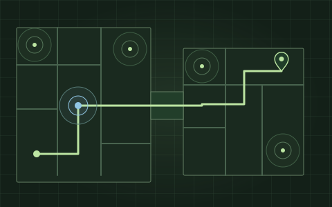

01 — INDOOR MAPPING & POSITIONING
Making complex places navigable.
Millionsof backend queries served
- The experience
- Help people find their way through complex venues, see their position in real time, and receive useful guidance as their surroundings change.
- From the ground up
- Built the backend APIs for an indoor maps SDK, bringing vector map tiles, indoor POI search and autocomplete into one solution. Implemented profile-based and multi-building routing, distance matrices and traveling-salesman waypoint optimisation, with turn-by-turn roadbooks.
- Connected to the venue
- Brought real-time indoor positioning together with BLE beacons and IoT device integration to support indoor context-aware push notifications. Connected venue data, positioning and navigation, then ported the new solution into the existing application stack.
